riffpass-tickets
Tickets
Genera el comprobante digital de cada entrada emitida.
ENTRADA_EMITIDAEl backend confirma la entrada y publica un hecho de negocio. Cada tarea secundaria la hace su propio consumidor, a su ritmo y con sus propios reintentos.
Genera el comprobante digital de cada entrada emitida.
ENTRADA_EMITIDAAvisa al titular y anuncia conciertos nuevos.
ENTRADA_EMITIDAEVENTO_CREADOBitácora y estadística de emitidas y validadas por concierto.
TODOS LOS TIPOSTres colas porque tienen criticidad y ritmo distintos: el ticket es parte del producto, el aviso pierde valor con el tiempo y la auditoría no puede perderse.
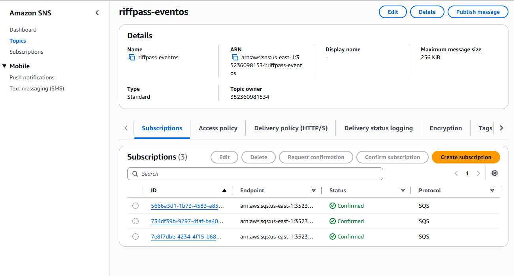
| Parámetro | Por qué |
|---|---|
| Raw delivery | La cola recibe el JSON original, sin el sobre de SNS; tipo llega como atributo SQS. |
| Filter policy | Evalúa el atributo tipo: cada cola recibe solo lo que procesa. |
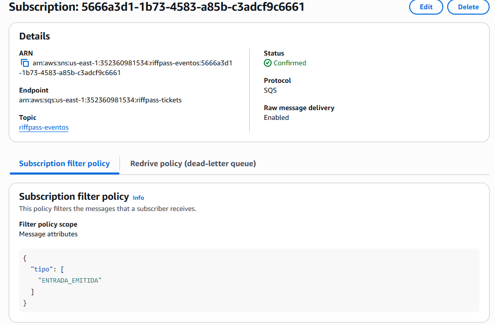
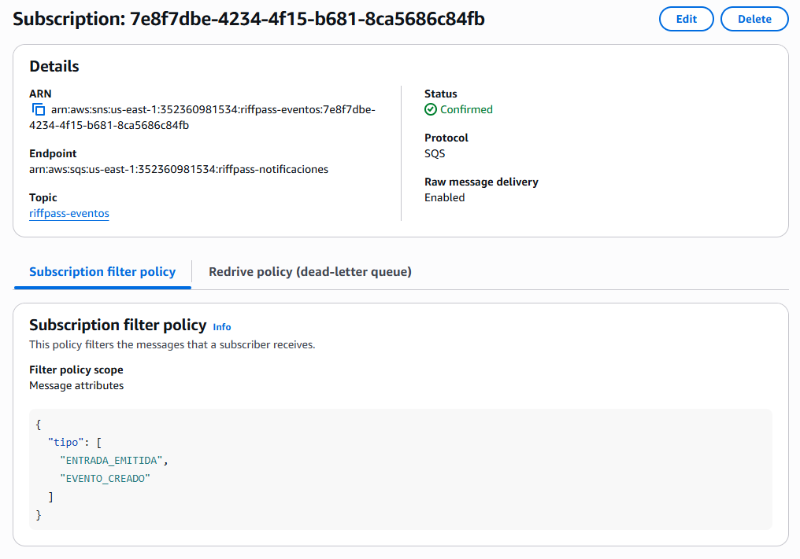
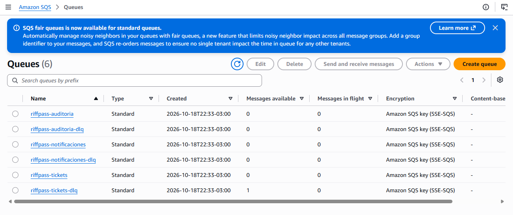
riffpass-tickets-dlq = 1: el mensaje que agotó sus 3 intentos en la prueba de fallo (diapositiva 9). Todas las demás colas en 0: los consumidores están al día.
| Parámetro | Tickets | Notif. | Auditoría |
|---|---|---|---|
| Visibility timeout | 30 s | 30 s | 30 s |
| maxReceiveCount | 3 | 5 | 5 |
| Retención cola | 4 días | 1 día | 7 días |
| Retención DLQ | 14 días | 7 días | 14 días |
| Long polling | 20 s | 20 s | 20 s |
| Retención: ticket cubre una caída de fin de semana; un aviso de más de un día ya no sirve; la auditoría no puede perderse. DLQ: retiene más que su cola (la edad cuenta desde el envío original). Limpieza: ACK elimina lo procesado, la retención expira lo olvidado y el administrador purga la DLQ revisada. | |||
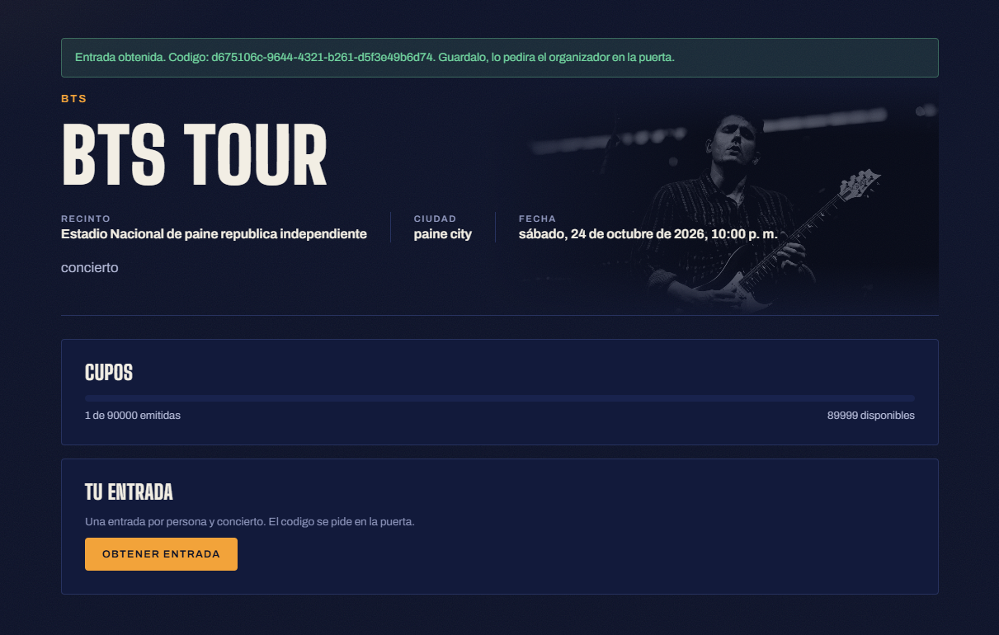
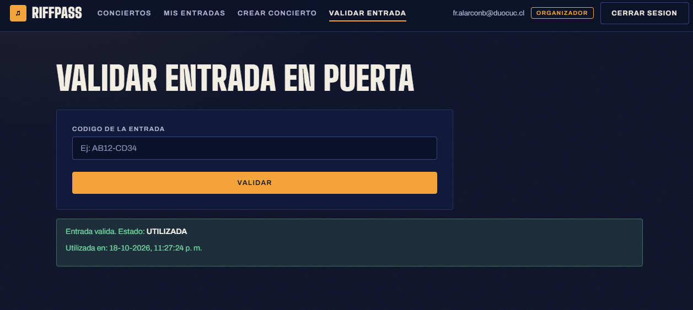
| Acción | Llega a | Patrón |
|---|---|---|
| Crear concierto | notificaciones + auditoría | Filtro |
| Obtener entrada | las 3 colas, mismo eventoId | Fanout |
| Validar entrada | solo auditoría | Filtro |
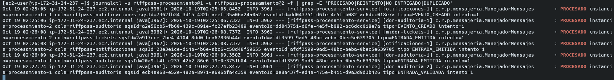
# riffpass-mensajeria.yml · importado por los 5 servicios riffpass.mensajeria: topico: riffpass-eventos colas: tickets: nombre: riffpass-tickets dlq: riffpass-tickets-dlq consumidor: consumidor-tickets tipos: [ENTRADA_EMITIDA] max-recepciones: 3 visibilidad: 30s retencion: 4d retencion-dlq: 14d notificaciones: # … auditoria: # tipos: [] → fanout // Consumidor: el nombre llega por placeholder @SqsListener(value = "${…colas.tickets.nombre}", id = "${…colas.tickets.consumidor}")
MensajeriaProperties es la clase única que lee tópico, colas, DLQ, suscripciones y consumidores.TopologiaMensajeriaConfig declara al iniciar, de forma idempotente: tópico, DLQ, cola con Redrive Policy, política de la cola, suscripción raw con filtro y alarma.EventoMensaje; PublicadorEventos lo envía a SNS después del commit. Sin SDK en controladores ni servicios de dominio.tickets, notificaciones, auditoria.El trabajo y el registro de idempotencia se confirman en la misma transacción.
SQS entrega al menos una vez. El eventoId ya está en mensajes_procesados (ON CONFLICT DO NOTHING), aunque lo reciba la otra réplica.
Timeout o dependencia caída. Rollback, sin ACK, backoff 5 s → 10 s → 20 s con Visibility. Al agotar maxReceiveCount, la Redrive Policy lo mueve.
JSON inválido, tipo ajeno a la cola o dato faltante. Reintentar nunca funcionaría.
Todo mensaje no entregado deja en el log id, intento y causa. Una sola clase, ManejadorMensajes, aplica la política a los tres consumidores.
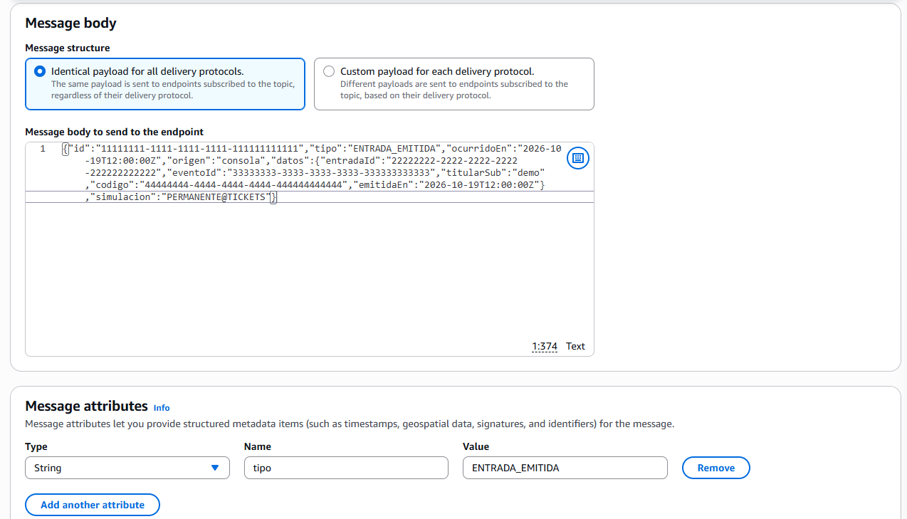
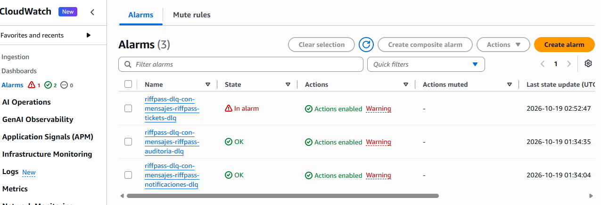
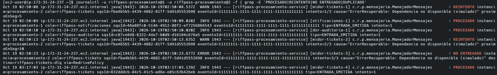
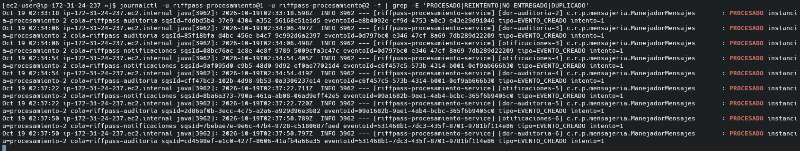
Ambas réplicas escuchan las mismas tres colas; los logs alternan procesamiento-1 y procesamiento-2.
SQS solo borra un mensaje con ACK. Al detenerse, la réplica termina lo que tiene en curso (apagado ordenado) y deja de pedir mensajes. Si muriera abruptamente, el mensaje sin ACK reaparece al vencer el visibility timeout y lo toma la otra.
La tabla de idempotencia es compartida: aunque ambas reciban el mismo mensaje, solo una lo procesa.
| Recurso | Operaciones |
|---|---|
/topicos | GET · POST · DELETE · publicar prueba |
/topicos/{t}/suscripciones | GET · POST · PUT filtro · DELETE |
/colas | GET estado · POST con DLQ · DELETE |
/colas/{c}/dlq/mensajes | GET ver · DELETE purgar |
/colas/{c}/dlq/reprocesos | POST reprocesar |
/consumidores/{id}/estado | PUT ACTIVO / PAUSADO en las 2 réplicas |
Toda la lógica vive en ColaAdminService; los controladores solo delegan. Protegido por Gateway y Spring: grupo ADMINISTRADOR + scope mensajeria-admin. Los recursos declarados exigen forzar=true para eliminarse. | |
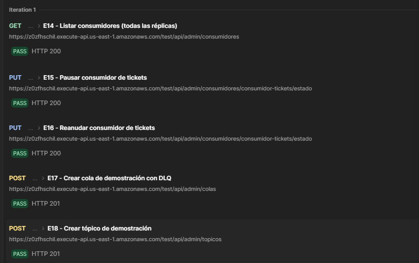
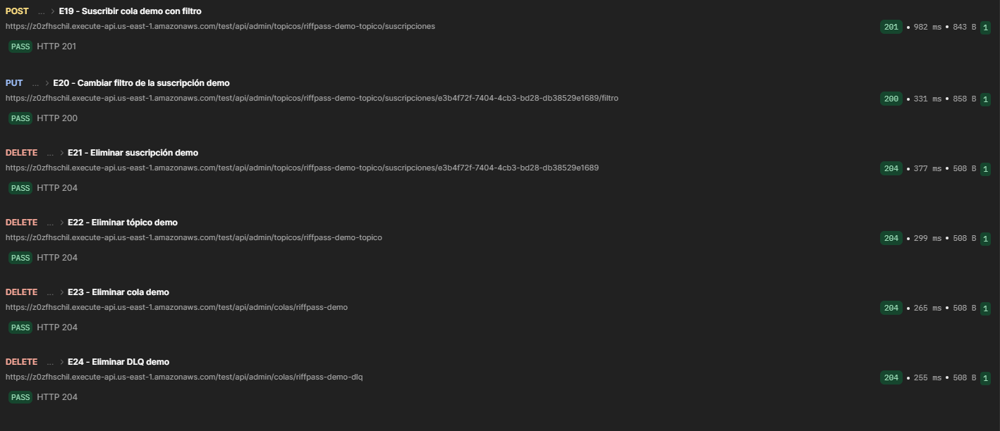
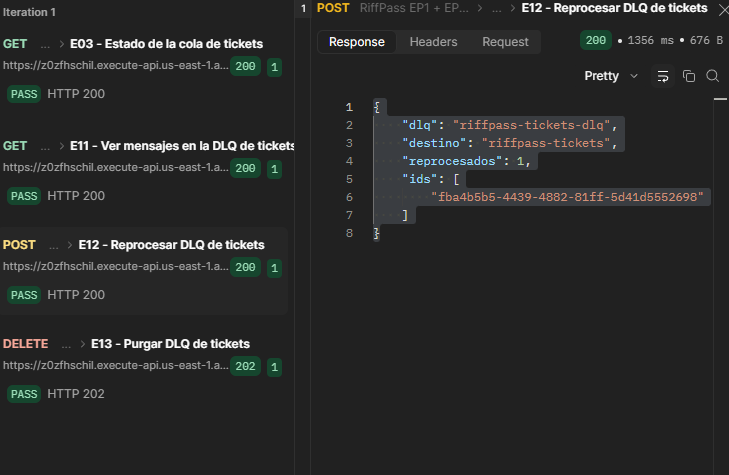
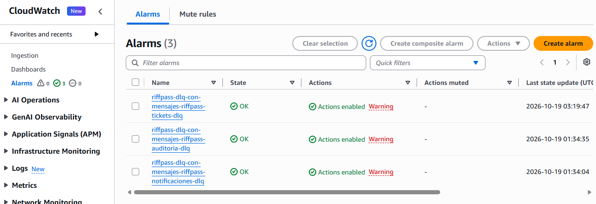
El reproceso envía de nuevo cuerpo y atributos a la cola original, suma el atributo reprocesos y recién entonces elimina el mensaje de la DLQ. El sqsId cambia, el eventoId mantiene la trazabilidad. Purgar repetido antes de 60 s responde 409, como exige SQS.
| Métrica AWS/SQS | Qué indica | Decisión |
|---|---|---|
ApproximateNumberOfMessagesVisible | Pendientes de procesar | Crece sostenido: faltan consumidores o hay uno pausado |
ApproximateNumberOfMessagesNotVisible | En proceso, sin ACK | Alto y estable: consumidores colgados o visibility corto |
ApproximateAgeOfOldestMessage | Retraso real | Cerca de la retención: se perderán mensajes, escalar |
| Mensajes en DLQ | No entregados | Mayor que 0: revisar log, corregir y reprocesar o purgar |
Máximo en 1 período de 60 s; datos faltantes = OK. En RiffPass cada mensaje en una DLQ es un ticket sin generar, un aviso no enviado o una auditoría faltante. Notifica al tópico riffpass-alertas.
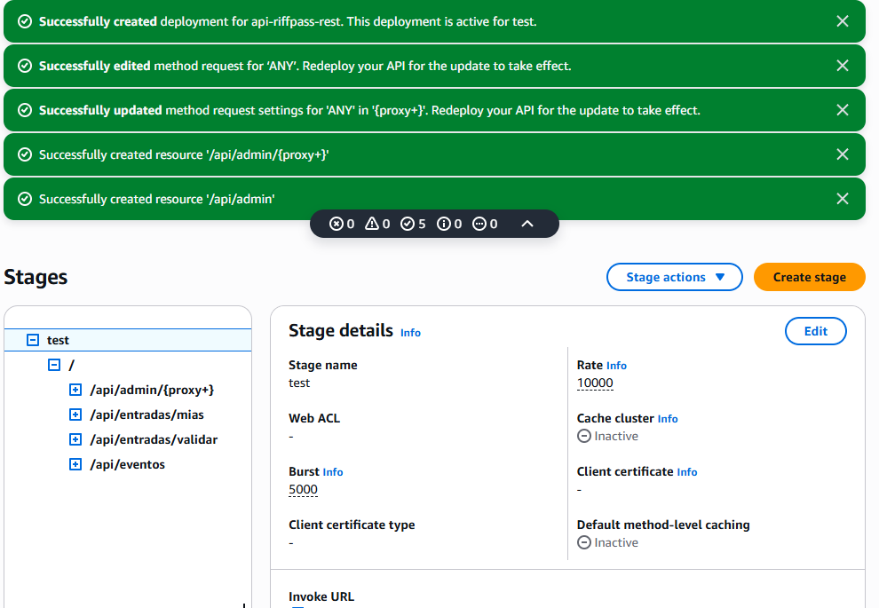
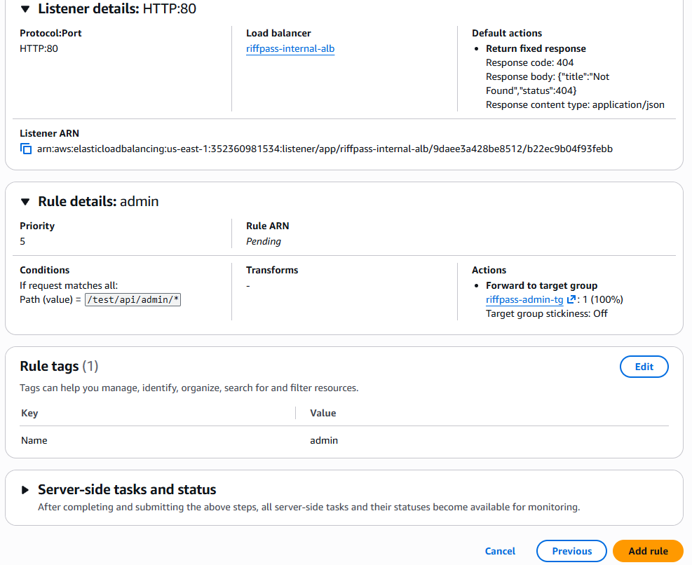
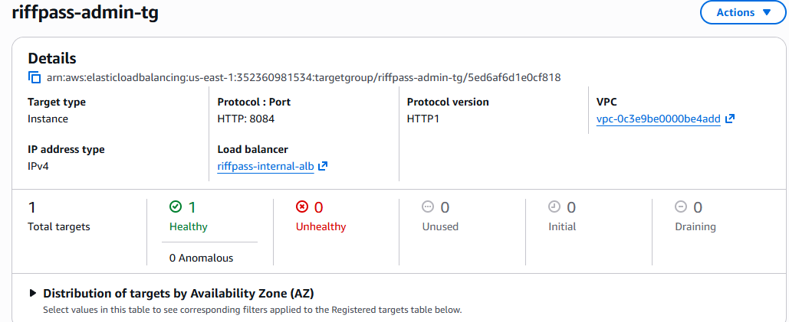
PROCESADO (fanout).PERMANENTE@TICKETS → reintentos y DLQ.Dentro del rango de 5 a 10 minutos. Antes: iniciar el Learner Lab, revisar los 5 servicios, renovar tokens y usar un id nuevo en cada publicación de prueba.